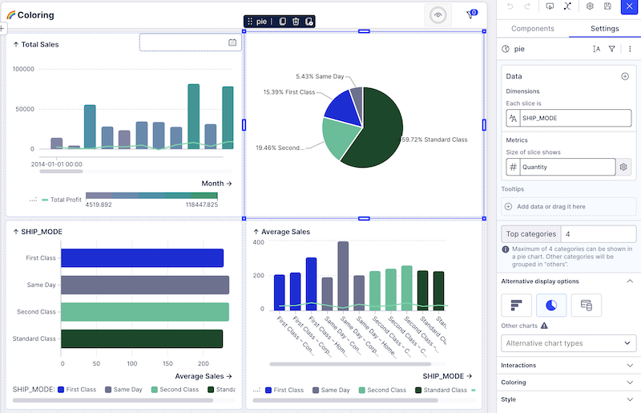

As a Visualization Engineer at Celonis, the leading Process Mining company in the world, I work tackling complex and interesting data visualization problems.
Some of them include: maintaining an in-house charting library, creating process and graph visualizations, creating editing tools for data visualization dashboards, accesibility for charts and much more.
Role: Front-end development
Technologies: Angular, D3.js, TypeScript, GraphViz
Charts created with in-house libraryProcess VisualizationAccesibility for chartsGraph Visualization

Dashboarding tools